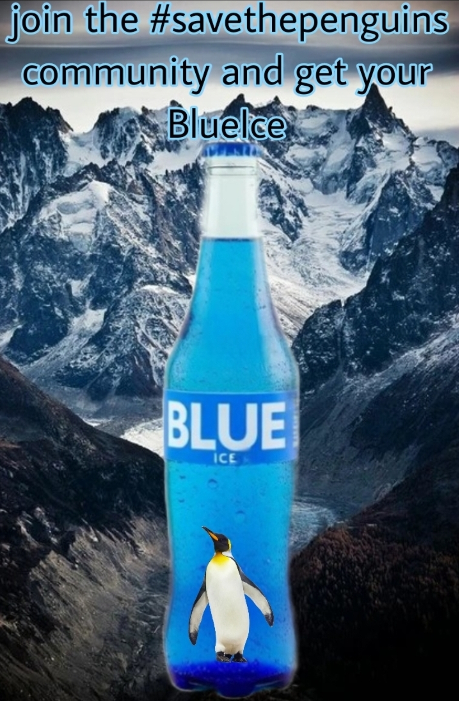
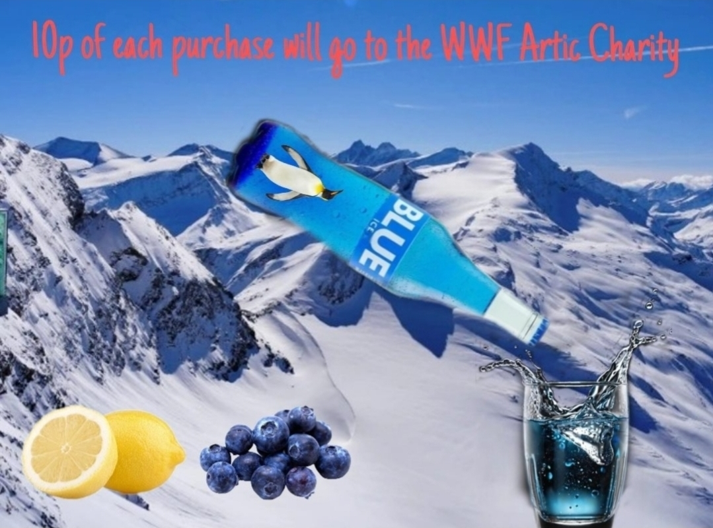
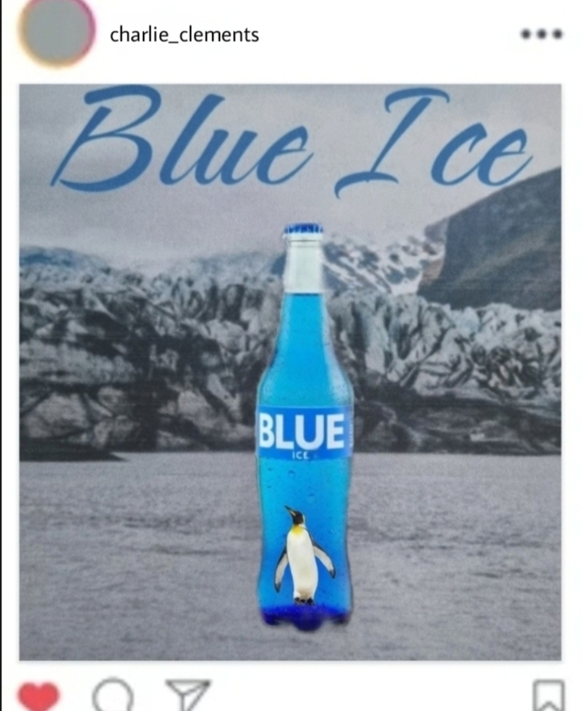
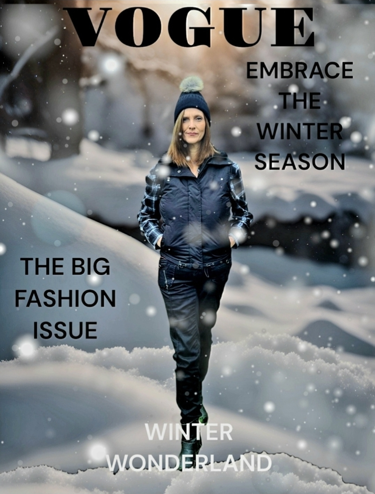

Welcome to my digital media portfolio. This website showcases a selection of my creative work,
including graphic design, advertising concepts, and social media content.
Portfolio
Here you are able to see some images of my course work for some of my digital media units.

×
This poster was created for my Unit 3 “Create a Media Product” assignment.

×
This billboard design was also part of my Unit 3 “Create a Media Product” unit.

×
This Instagram layout was another piece from my Unit 3 unit.
×
This photo was created for my Unit 8 "Photography" unit.

×
This Vogue‑style photo was also part of my Unit 8 unit.
Animation Portfolio
This section showcases my animation work. The still image below represents a key moment from the animation.
I chose digital media because it seemed interesting and I liked how many different topics it includes. Most of the work is coursework, which fits the way I learn and gives me the chance to be hands‑on and creative. I’m calm, organised, curious and motivated, and I enjoy experimenting with different ideas across all areas of digital media.
In the future, I want to work in something related to either Computer Science or Digital Media. I want people to see me as passionate, hardworking, creative, reliable, kind and caring, both in my work and as a person.
Skills
I’ve developed a strong set of digital media skills using tools like Photoshop, Photopea, Picsart, Canva and Clipchamp.
I enjoy photography, editing, designing adverts and creating websites, whether that’s through HTML, CSS and JavaScript
or using Wix.com. I like being hands‑on with my work and finding ways to make things look clean and professional.
Contact
If you would like to get in touch with me, please fill out the form below.